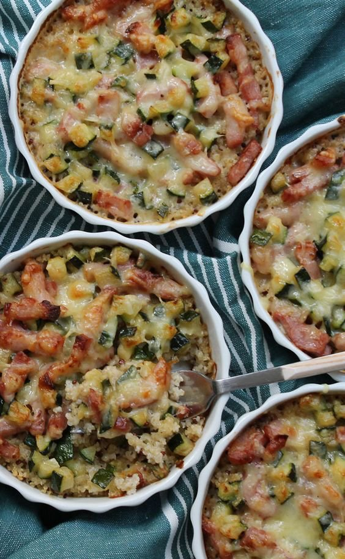

Gratin de quinoa
Ingredients
4×
- 1 courgette
- 200 g de quinoa
- 150 g de lardons fumés
- 1 gousse d'ail
- 10 cl de crème liquide
- 50 g de comté râpé
- muscade

Préparation
Étape 1
Couper en petits dés 1 courgette. Cuire 200 g de quinoa.
Étape 2
Rissoler 150 g de lardons fumés avec 1 gousse d'ail hachée, ajouter la courgette, poivrer et laisser cuire.
Étape 3
Mélanger 10 cl de crème liquide, 50 g de comté râpé (en garder un peu) et de la muscade, puis ajouter lardons et courgette.
Étape 4
Dans 4 petits plats (ou un grand), alterner une couche de quinoa et une couche d’appareil. Saupoudrer du reste de comté.
Étape 5
Cuire 20min à 180ºC.